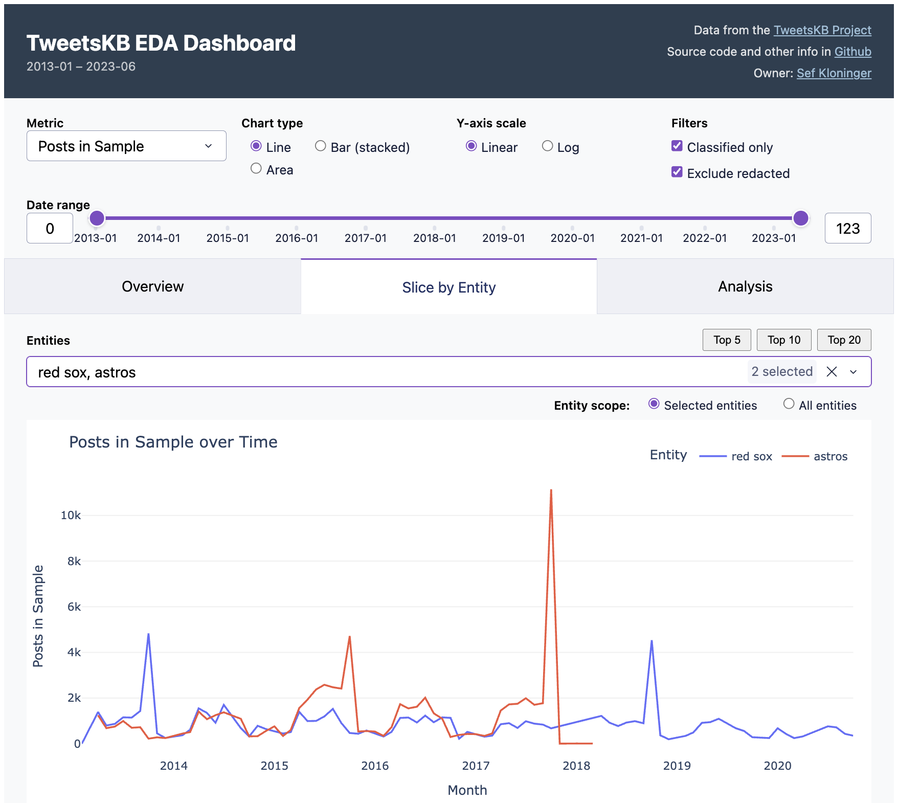
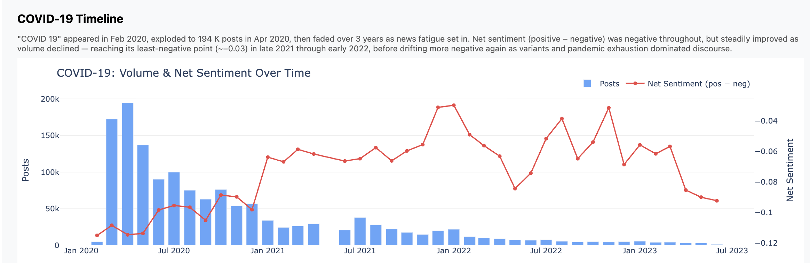
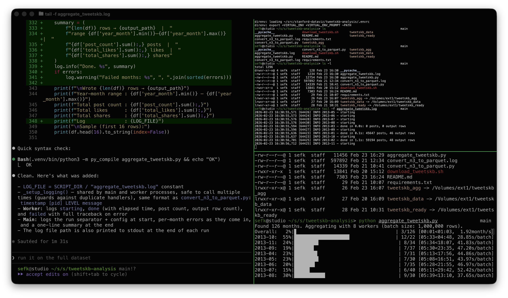

"Hey Claude, What's Interesting In This Dataset?"

This week I used Claude as my pipeline engineer and data analyst. I had a ton of fun and figured I'd write about it.
I've been taking a Data Visualization class at Stanford Continuing Studies (TECH 26, Winter 2026). I needed a final project. There's this data set I've always wanted to play with, TweetsKB. Researchers took the Twitter Firehose data from 2013-23, back when it was more available, and ran it through entity extraction and sentiment analysis. They made the dataset available for others to work with. It's well documented and reasonable size, about 500GB. I figured there'd be something interesting in there.
The cool part didn't turn out to be the analysis itself. I did find and graph some trends, like Wordle hitting the scene in Feb 2022 and then falling off; contrast that with K-Pop, which we all know has been much more durable. You can see those in the presentation I did for the class, and I included some charts below.
What was fun was my week of AI coding data analytics, a joyful week of AI data abalytics.
What I (We) Did
What I spent the week doing was chatting with Claude interspersed with running pipelines, bringing up and down jobs, etc. What it felt like though was having my own junior engineer working hard for me, doing whatever I asked, and doing it well and without complaint.
This section is a bit of nuts and bolts of how that went, skippable if you don't want the blow-by-blow.
We started with ETL pipelines. File format conversion, multiprocessing, scaling to fit RAM and processor limitations, progress bars and interruption/restart logic.
Yikes, this is full of offensive stuff! I asked for redaction with stable terms and it found and used a nice off-the-shelf library.
When I didn't trust what I was seeing, I asked for end-to-end data quality tests. Claude wrote them and then found and fixed a double counting bug. Nice!
When I wanted to wander around in the data I asked for an EDA dashboard and got one. EDA is the term of art I learned in class, "exploratory data analytics". The idea is something where you can click around, slice and scrub, looking for interesting things like correlations and trends.
You can see this in the screenshot at the top of this post. Essentially I got the "Overview" and "Slice by Entity" tabs in one shot. How you do EDA with it? For example, the default view are two base ball teams. See the peaks when the Red Sox won championships in 2013 and 2018? But the Astros peak was higher in 2017, presumably because of the scandal. Fun, right?
I then iterated on that dashboard quite a bit. Instead of a normal notebook or colab-style workflow I was used to, instead I iterated around the dashboard. I'd ask Claude add or update charts in the dashboard ("annualize the last data point"), it'd reload, test and repeat. I did fall back to python or a notebook when I had to look at the raw data, but just in throwaway mode. I found this to be a really fast way to work.
But I still had a hard time finding someting interesting in the dataset. So I just asked an open-ended question, basically "find interesting stuff" and it produced five analysis scripts. Most of what's in the "Analysis" came from this one query, except for "Democrats vs. Republicans", which I did on my own and didn't prove too insightful.
And yes, when I had ops issues Claude fixed those for me too, see screenshot below. Sure, I could tune workers vs. threads and manage PID files, but who wants to? And yes, when it came time to write the presentation, Claude wrote that for me too. Well, most of it.
You can play with the dashboard yourself. It's hosted on an underpowered server at my home, so if it doesn't work, try again later. All the code is in GitHub and there are known issues.
At some point I felt it was helpful to define "personas" to Claude to better describe the goals of each prompt. Then I started a prompt with "hey dashboard engineer, I'd like to...". I'm not sure how much that helped, it's tough to tell.
Some Thoughts
Let's not give AI too much credit. Pulling entity mentions out of tweets is something that data scientists and journalists have been doing for years. And this particular dataset probably has been around for a while and might very well have been used and written about, by undergrads. The story here might very well not be "gee whiz, looks at how smart AI is" and more "look at how AI has scooped up and repackaged years of everyone else's work."
The speed of accomplishing these dev/debug tasks was remarkable. I felt like I had a coworker. And at remarkably low cost, too. This was all using the Claude $20/month plan. This past week was the time I poked above the token cap. I happily paid $5 more to keep on going.
Is this programming? I think so, at least it felt that way when I was doing it. I was very much using the same parts of my brain as when I'm writing all the code myself. Indeed for years most of us have been "progamming" mostly via Google and Stack Overflow. It's like that but fast.
Charts
Here are three charts that fell out. Again, don't focus so much on the insights but how these came from a high-level, open ended prompt.



Some Screenshots
Maybe some people would like to see what this looked like when I was doing it.
Here's a screenshot during pipeline development. On the left is Claude adding
some logging; the top right is tail -f on a log file, and the bottom right
shows the progress bars churning through the data.

My modest Mac has 8 performance cores, hence 8 workers.
And this screenshot is kind of fun. Look at how Claude explained a worker crash issue that I asked it to debug: "You already flagged it, the UI literally says..." 😀

Claude made the adjustment and saved its suggestions in a Github Issue to look if I want to look at it again later.